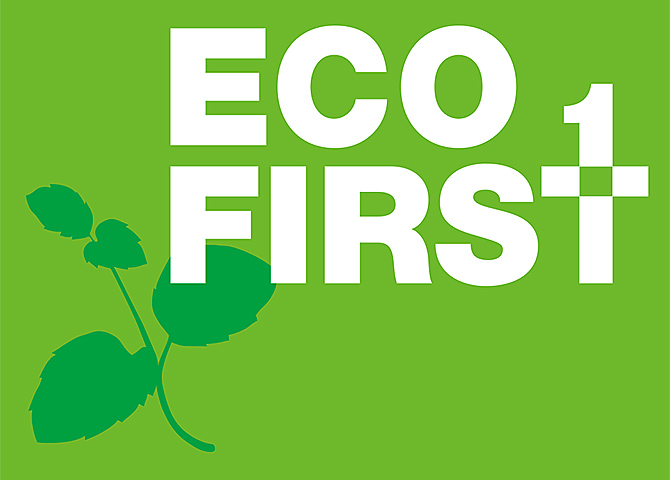
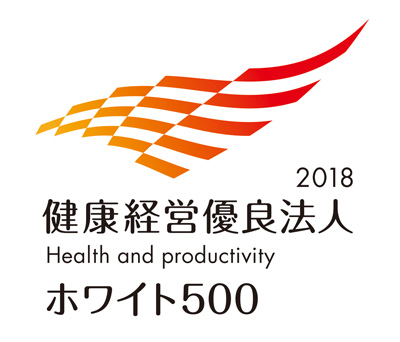
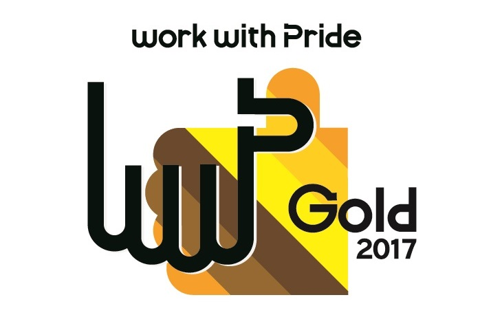
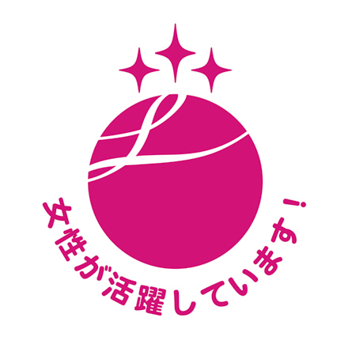
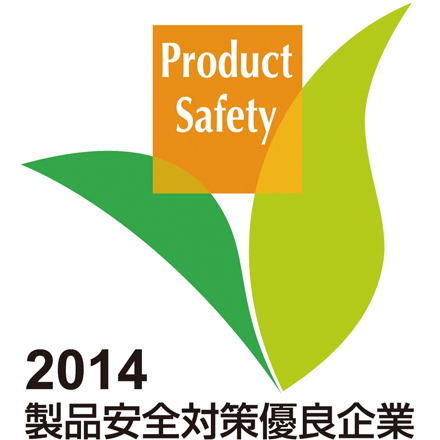

LIXILは、CR戦略のなかで、マテリアルイシューを定め、目標を設定しています。グローバル企業として、社会への約束として取り組み、成果を報告していきます。
日本でも、国内最大級の住まいと暮らしの総合住生活企業として、リーダーシップを発揮していく所存です。省庁などが進めるさまざまな活動に参画し、評価や認定を受けています。
「エコ・ファースト」とは、企業の環境保全に関する業界のトップランナーとしての取り組みを促進していくため、企業が環境大臣に対し、地球温暖化対策、廃棄物・リサイクル対策など、自らの環境保全に関する取り組みを約束する制度です。
LIXILは2008年の制度発足時にいち早く「エコ・ファースト企業」として環境省から認定を受け、地球環境保全活動を行ってきました。2016年3月、LIXILグループとして、「コーポレートレスポンシビリティ（CR）戦略」を発表し、注力テーマ「水の保全と環境保護」を掲げ、具体的目標「環境ビジョン2030 環境負荷ネットゼロ」達成に向け活動を続けています。このCR戦略に基づき、LIXILは環境省と「エコ・ファーストの約束」を更新し、継続して地球環境負荷の削減に取り組んでいます。
「エコ・ファーストの約束（更新書）」 大項目
- 製品・サービスのライフサイクル全体での環境影響を評価し、住生活の質の改善や、水危機や気候変動をはじめとした環境課題の解決に貢献する製品及びサービスの開発と普及に取り組みます。
- あらゆる業務において環境配慮型のオペレーションを実践し、持続可能な資源の利用、エネルギーや水の効率的な利用、廃棄物や化学物質の適正な管理・削減などに取り組みます。
- 企業市民としてステークホルダーと相互理解を深め、地域社会に参画し協働します。
企業におけるインクルージョンを通じて女性のキャリア推進を支援する非営利団体カタリストから、日本において初となる「カタリスト特別賞」を受賞しました。
男性の仕事・職場というイメージを持たれがちな建築業界、住宅設備機器業界の中で、妊娠中の女性やワーキングマザー、女性・男性サポーターを対象にした様々なプログラムの展開や人材育成など、女性が活躍できる体制づくりを短期間で進めてきたことが高く評価されました。
これからも従業員一人ひとりがそれぞれの力を発揮して活躍できるよう、ダイバーシティの文化醸成に取り組んでまいります。
CATALYIST
カタリストジャパン
左：カタリストCEOデボラ・ギリスさん
右：LIXIL CHRO松村はるみ
「女性の職業生活における活躍の推進に関する法律（女性活躍推進法）」が制定され、2016年4月1日から、国・地方公共団体、労働者301人以上の大企業は、女性の活躍推進に向けた数値目標と取り組みを盛り込んだ行動計画の策定などが義務付けられています。
女性がより活躍するためには働き方を含む環境の整備を更に進める必要があることから、以下の通り、行動計画を策定しました。
「女性活躍推進法」に基づく「一般事業主行動計画」
LIXILでは女性の活躍を積極的に進めるために2014年8月に『We Doアクション』を策定し、数値目標を掲げて取り組んでいます。今般の「女性の職業生活における活躍の推進に関する法律」成立を受けて分析を行った結果、女性がより活躍するためには働き方を含む環境の整備を更に進める必要があることから、次のように行動計画を策定します。
- 計画期間 平成28年4月1日 ～ 平成31年3月31日
- 当社の課題
- 男性の育児休業の取得率が低い
- 有給休暇の取得率が低い
- 目標と取組内容・実施時期
目標1：
男性の育児参画を促すため育児休暇制度（仮称）を整え、平成30年度には取得率を50％以上とする。〈取組内容・実施時期〉
- 平成28年4月～ 育児休暇制度（仮称）の導入を検討
※同年6月、上記制度として「配偶者出産・育児休暇（ぱぱの子育て休暇）」制定、導入- 平成29年4月～ 上記制度の導入、及び取得促進活動を展開
- 平成30年4月～ 平成29年度の実績を把握し、必要に応じて目標達成のための促進活動を実施
目標2：
長時間労働の是正を目的として、平成30年度の正社員の有給休暇取得率を平成26年度実績から10ポイント以上アップする。（取得率55％以上）〈取組内容・実施時期〉
- 平成28年4月～ 平成27年度の実績を分析し、対応策を検討
- 平成29年4月～ 取得促進のための対応策を展開
- 平成30年4月～ 平成29年度の実績を把握し、必要に応じて目標達成のための促進活動を強化
以上
このほかにも、ダイバーシティの推進や製品安全への取り組みなどへ、高い評価を獲得しています。
| タイトル | 概要 | 取得年 |
|---|---|---|
| 「健康経営優良法人2018」  |
経済産業省が日本健康会議と共同で「健康経営」を実践している法人を選定する「健康経営優良法人認定制度」の「大規模法人部門（ホワイト500）」において、「健康経営優良法人」に2年連続で認定 経済産業省 健康経営優良法人認定制度 |
2018年2月 |
| PRIDE指標 ゴールド  |
ダイバーシティ・マネジメントの促進と定着を支援する任意団体 work with Prideによる、LGBTなどの性的マイノリティに関する取り組みの評価指標「PRIDE指標2017」で「ゴールド」受賞 work with Pride |
2017年10月 |
| カタリスト特別賞 |
企業におけるインクルージョンを通じて女性のキャリア推進を支援する非営利団体カタリストから「カタリスト特別賞」を受賞 CATALYST カタリストジャパン |
2017年6月 |
| 認定マーク「えるぼし」 （3段階目）  |
厚生労働省東京労働局より「女性活躍推進法第9条」に基づく基準適合一般事業主として最高位の認定を取得 厚生労働省 女性活躍推進企業データベース 内閣府男女共同参画局 女性活躍推進法「見える化サイト」 |
2017年1月 |
| 精神障害者等雇用 優良企業認証 |
精神障がい者等を中心とした障がい者の雇用促進に積極的に取り組む企業として、厚生労働省委託事業「精神障害者等雇用優良企業認証」を取得。事務局： 一般社団法人障害者雇用企業支援協会 | 2016年5月 |
| 次世代認定マーク 「くるみん」 |
厚生労働省東京労働局 より「次世代育成支援対策推進法」に基づく「子育てサポート企業」に認定 | 2015年10月 |
| 消費者教育教材資料 表彰 優秀賞  |
公益財団法人消費者教育支援センター 主催「平成26年度消費者教育教材資料表彰」において、「安全教育授業プログラム～家の中の安全を考えよう～」が優秀賞受賞 安全教育授業プログラム > |
2015年10月 |